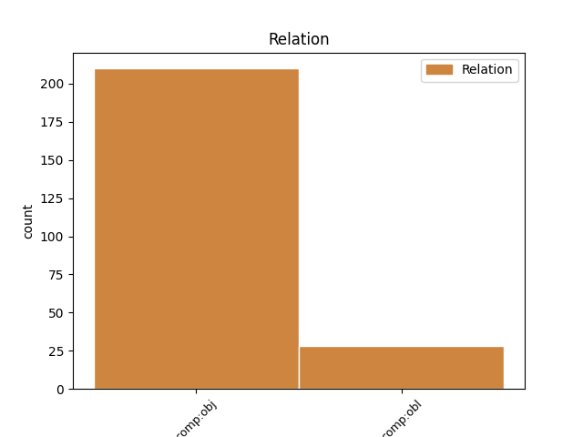
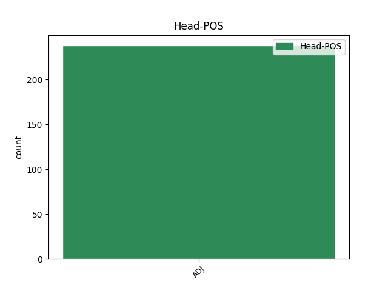
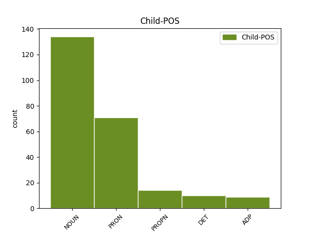

Distribution of features within this leaf



Agreement Rules sorted by frequency.
- When the dependent token is the direct object complements(comp:obj) of the head token, and the head token is ADJ and the dependent token is NOUN.
1 Sociolog _ _ _ _ 0 _ _ _
2 Srđan _ _ _ _ 0 _ _ _
3 Puhalo _ _ _ _ 0 _ _ _
4 kaže _ _ _ _ 0 _ _ _
5 kako _ _ _ _ 0 _ _ _
6 kampanje _ _ _ _ 0 _ _ _
7 informiranja _ _ _ _ 0 _ _ _
8 javnosti _ _ _ _ 0 _ _ _
9 mogu _ _ _ _ 0 _ _ _
10 proizvesti _ _ _ _ 0 _ _ _
11 neke _ _ _ _ 0 _ _ _
12 rezultate _ _ _ _ 0 _ _ _
13 , _ _ _ _ 0 _ _ _
14 ali _ _ _ _ 0 _ _ _
15 je _ _ _ _ 0 _ _ _
16 malo _ _ _ _ 0 _ _ _
17 vjerojatno _ _ _ _ 0 _ _ _
18 da _ _ _ _ 0 _ _ _
19 imaju _ _ _ _ 0 _ _ _
20 veliki velik ADJ Agpmsayn Animacy=Inan|Case=Acc|Definite=Def|Degree=Pos|Gender=Masc|Number=Sing 0 _ _ _
21 utjecaj utjecaj NOUN Ncmsan Animacy=Inan|Case=Acc|Gender=Masc|Number=Sing 20 comp:obj _ SpaceAfter=No
22 . _ _ _ _ 0 _ _ _
1 Predsjednik _ _ _ _ 0 _ _ _
2 Kluba _ _ _ _ 0 _ _ _
3 Blažo _ _ _ _ 0 _ _ _
4 Stevanović _ _ _ _ 0 _ _ _
5 pozvao _ _ _ _ 0 _ _ _
6 je _ _ _ _ 0 _ _ _
7 javnost _ _ _ _ 0 _ _ _
8 da _ _ _ _ 0 _ _ _
9 prijavi _ _ _ _ 0 _ _ _
10 svakog _ _ _ _ 0 _ _ _
11 kandidata _ _ _ _ 0 _ _ _
12 optuženog _ _ _ _ 0 _ _ _
13 , _ _ _ _ 0 _ _ _
14 ili _ _ _ _ 0 _ _ _
15 kazneno _ _ _ _ 0 _ _ _
16 gonjenog _ _ _ _ 0 _ _ _
17 za _ _ _ _ 0 _ _ _
18 ratne _ _ _ _ 0 _ _ _
19 zločine _ _ _ _ 0 _ _ _
20 ili _ _ _ _ 0 _ _ _
21 poslove _ _ _ _ 0 _ _ _
22 vezane vezati ADJ Appmpay Case=Acc|Definite=Def|Degree=Pos|Gender=Masc|Number=Plur|VerbForm=Part|Voice=Pass 0 _ _ _
23 za za ADP Sa Case=Acc 22 comp:obj _ _
24 organizirani _ _ _ _ 0 _ _ _
25 kriminal _ _ _ _ 0 _ _ _
26 . _ _ _ _ 0 _ _ _
Disagree Examples:
1 " _ _ _ _ 0 _ _ _
2 Dojam _ _ _ _ 0 _ _ _
3 je _ _ _ _ 0 _ _ _
4 da _ _ _ _ 0 _ _ _
5 su _ _ _ _ 0 _ _ _
6 koraci _ _ _ _ 0 _ _ _
7 poduzeti _ _ _ _ 0 _ _ _
8 prema _ _ _ _ 0 _ _ _
9 tim _ _ _ _ 0 _ _ _
10 medijima _ _ _ _ 0 _ _ _
11 , _ _ _ _ 0 _ _ _
12 kojima koji DET Pi-mpl Case=Loc|Gender=Masc|Number=Plur|PronType=Int,Rel 14 comp:obj _ _
13 su _ _ _ _ 0 _ _ _
14 izrečene izreći ADJ Appfpny Case=Nom|Definite=Def|Degree=Pos|Gender=Fem|Number=Plur|VerbForm=Part|Voice=Pass 0 _ _ _
15 presude _ _ _ _ 0 _ _ _
16 , _ _ _ _ 0 _ _ _
17 selektivni _ _ _ _ 0 _ _ _
18 te _ _ _ _ 0 _ _ _
19 da _ _ _ _ 0 _ _ _
20 institucije _ _ _ _ 0 _ _ _
21 ne _ _ _ _ 0 _ _ _
22 koriste _ _ _ _ 0 _ _ _
23 iste _ _ _ _ 0 _ _ _
24 metode _ _ _ _ 0 _ _ _
25 u _ _ _ _ 0 _ _ _
26 provođenju _ _ _ _ 0 _ _ _
27 zakona _ _ _ _ 0 _ _ _
28 prema _ _ _ _ 0 _ _ _
29 svim _ _ _ _ 0 _ _ _
30 medijima _ _ _ _ 0 _ _ _
31 " _ _ _ _ 0 _ _ _
32 , _ _ _ _ 0 _ _ _
33 izjavila _ _ _ _ 0 _ _ _
34 je _ _ _ _ 0 _ _ _
35 za _ _ _ _ 0 _ _ _
36 SETimes _ _ _ _ 0 _ _ _
37 ravnateljica _ _ _ _ 0 _ _ _
38 Medijskog _ _ _ _ 0 _ _ _
39 instituta _ _ _ _ 0 _ _ _
40 Makedonije _ _ _ _ 0 _ _ _
41 Biljana _ _ _ _ 0 _ _ _
42 Petkovska _ _ _ _ 0 _ _ _
43 . _ _ _ _ 0 _ _ _
1 " _ _ _ _ 0 _ _ _
2 Ovo _ _ _ _ 0 _ _ _
3 bi _ _ _ _ 0 _ _ _
4 moglo _ _ _ _ 0 _ _ _
5 zakomplicirati _ _ _ _ 0 _ _ _
6 funkcioniranje _ _ _ _ 0 _ _ _
7 Predsjedništva _ _ _ _ 0 _ _ _
8 BiH _ _ _ _ 0 _ _ _
9 i _ _ _ _ 0 _ _ _
10 Ministarstva _ _ _ _ 0 _ _ _
11 vanjskih _ _ _ _ 0 _ _ _
12 poslova _ _ _ _ 0 _ _ _
13 zbog _ _ _ _ 0 _ _ _
14 činjenice _ _ _ _ 0 _ _ _
15 da _ _ _ _ 0 _ _ _
16 je _ _ _ _ 0 _ _ _
17 Komšić _ _ _ _ 0 _ _ _
18 , _ _ _ _ 0 _ _ _
19 zajedno _ _ _ _ 0 _ _ _
20 s _ _ _ _ 0 _ _ _
21 ostalim _ _ _ _ 0 _ _ _
22 članovima _ _ _ _ 0 _ _ _
23 predsjedništva _ _ _ _ 0 _ _ _
24 , _ _ _ _ 0 _ _ _
25 zadužen zadužiti ADJ Appmsnn Case=Nom|Definite=Ind|Degree=Pos|Gender=Masc|Number=Sing|VerbForm=Part|Voice=Pass 0 _ _ _
26 za za ADP Sa Case=Acc 25 comp:obj _ _
27 vanjsku _ _ _ _ 0 _ _ _
28 politiku _ _ _ _ 0 _ _ _
29 " _ _ _ _ 0 _ _ _
30 , _ _ _ _ 0 _ _ _
31 rekao _ _ _ _ 0 _ _ _
32 je _ _ _ _ 0 _ _ _
33 Tihić _ _ _ _ 0 _ _ _
34 za _ _ _ _ 0 _ _ _
35 SETimes _ _ _ _ 0 _ _ _
36 . _ _ _ _ 0 _ _ _
1 " _ _ _ _ 0 _ _ _
2 Zemlji zemlja NOUN Ncfsd Case=Dat|Gender=Fem|Number=Sing 4 comp:obj _ _
3 su _ _ _ _ 0 _ _ _
4 potrebni potreban ADJ Agpmpny Case=Nom|Definite=Def|Degree=Pos|Gender=Masc|Number=Plur 0 _ _ _
5 političari _ _ _ _ 0 _ _ _
6 kao _ _ _ _ 0 _ _ _
7 što _ _ _ _ 0 _ _ _
8 je _ _ _ _ 0 _ _ _
9 Komšić _ _ _ _ 0 _ _ _
10 . _ _ _ _ 0 _ _ _
1 " _ _ _ _ 0 _ _ _
2 Potrebna potreban ADJ Agpfsny Case=Nom|Definite=Def|Degree=Pos|Gender=Fem|Number=Sing 0 _ _ _
3 nam mi PRON Pp1-pd Case=Dat|Number=Plur|Person=1|PronType=Prs 2 comp:obj _ _
4 je _ _ _ _ 0 _ _ _
5 ideja _ _ _ _ 0 _ _ _
6 da _ _ _ _ 0 _ _ _
7 ponovno _ _ _ _ 0 _ _ _
8 ujedinimo _ _ _ _ 0 _ _ _
9 društvo _ _ _ _ 0 _ _ _
10 , _ _ _ _ 0 _ _ _
11 da _ _ _ _ 0 _ _ _
12 ono _ _ _ _ 0 _ _ _
13 krene _ _ _ _ 0 _ _ _
14 naprijed _ _ _ _ 0 _ _ _
15 kao _ _ _ _ 0 _ _ _
16 cjelina _ _ _ _ 0 _ _ _
17 . _ _ _ _ 0 _ _ _
1 Setimes _ _ _ _ 0 _ _ _
2 : _ _ _ _ 0 _ _ _
3 Jeste _ _ _ _ 0 _ _ _
4 li _ _ _ _ 0 _ _ _
5 zadovoljni zadovoljan ADJ Agpmpny Case=Nom|Definite=Def|Degree=Pos|Gender=Masc|Number=Plur 0 _ _ _
6 kohabitacijom kohabitacija NOUN Ncfsi Case=Ins|Gender=Fem|Number=Sing 5 comp:obj _ _
7 s _ _ _ _ 0 _ _ _
8 vladom _ _ _ _ 0 _ _ _
9 ? _ _ _ _ 0 _ _ _